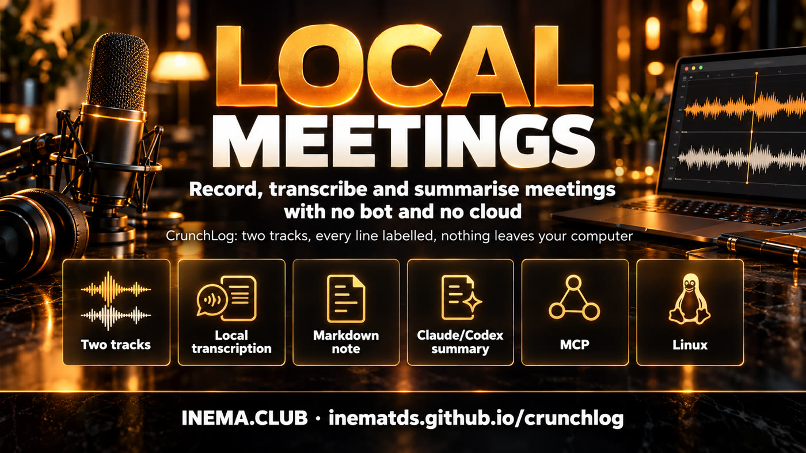

100% local meeting notes · Windows, macOS and Linux
Your meeting becomes a note without leaving your machine
CrunchLog records the call on two tracks (what you hear and what you say), transcribes it on your CPU and gives you a Markdown note with every line attributed to a speaker. No bot in the call, no account, no API key.
A meeting notetaker that doesn't send your audio to the cloud
Created by Christian Landsteiner and presented in the AI Automations by Jack community (Skool). Version tested here: 2.0.0a1. This guide and the Linux scripts are by INEMA; the software is not in this repository because the evaluation licence forbids redistribution.

🎧 Two tracks, no driver
The sound output (Zoom, Meet, YouTube) and the microphone are recorded separately. Everything that comes from the microphone is you ("Me"); the AI only has to tell apart the people on the other end. No VoiceMeeter or BlackHole needed.
🔒 Local transcription
Parakeet TDT 0.6B v2 and speaker separation with sherpa-onnx, all on the CPU. Measured here: 27.6× real time, so a 1-hour call is ready in about 2 minutes.
🤖 Claude and Codex through your subscription
Summary, decisions, action items and questions about the meeting use your already logged-in Claude Code or Codex CLI, with no paid API. There is also an MCP server and a Claude OS integration.
How it works
One key to start, another to stop, and the note appears
Each recording becomes a folder (the "bundle") with far.wav, mic.wav and meta.json. The local pipeline turns that into the note.
crunchlog toggle→far.wav + mic.wav→VAD + ASR per track→gate removes echo from the mic→speaker separation→Markdown note→optional summary (Claude/Codex)
Note
Saved in ~/CrunchLog/notes/, with frontmatter, summary, decisions, action items, open questions and the transcript with [mm:ss] Speaker:. Works well inside an Obsidian vault.
Privacy
Audio and bundles never leave the machine. Text only leaves if you ask for a summary or ask, connect an MCP client or turn on Live mode (which sends the audio to AssemblyAI). Fully private mode: provider = "none".
Limits
English only in this version, ~700 MB of models downloaded once, macOS 14.2+ on Apple Silicon. Everything beyond recording and generating the note is experimental. On Linux, officially only processing runs; recording comes from our scripts.
Prerequisites
What you need first
The zip is in the Skool post (AI Automations by Jack community). uv downloads Python 3.12 by itself.
uv
Astral's Python manager. Install it and open a new terminal.
# Windows (PowerShell)powershell -ExecutionPolicy ByPass -c "irm https://astral.sh/uv/install.ps1 | iex"# macOS / Linuxcurl -LsSf https://astral.sh/uv/install.sh | sh
System
Windows 10/11 or macOS 14.2+ (Apple Silicon). Linux with PipeWire using the scripts in this repository (tested on Ubuntu ARM64).
# Linux: check PipeWirewhich pw-record wpctl
Optional
ffmpeg to import mp3/mp4. Claude Code or Codex logged in, for summaries and questions.
claude --version
codex --version
ffmpeg -version
User guide · step by step
From the zip to your first note in 10 minutes
Real commands, tested on this machine. Times and numbers come from the runs of 05/10/2026.
1
Download and unzip
Go to the Skool post, download crunchlog-2.0.0a1.zip and unzip it. The easiest way, recommended by the author, is to let Claude Code install it: open a terminal in the folder, run claude and paste:
I have extracted CrunchLog into this folder. Read START-HERE.md and AGENTS.md and install it for me, then run the demo so I get my first note.
It follows the AGENTS.md from the zip, asks four questions (notes folder, far device, microphone, summary provider) and finishes with the demo. If you prefer to do it by hand, follow the steps below.
2
Install as a uv tool
Inside the unzipped folder. [mcp] already includes the MCP server; use ".[mcp,tray]" if you want the tray icon.
If command not found appears, run uv tool update-shell and open another terminal.
3
Configure and download the models
Writes the config, the glossary and the summary template, and downloads ~700 MB of models (Parakeet, silero, pyannote, TitaNet). Enter accepts the defaults.
crunchlog devices# far and mic device numberscrunchlog setup# or: --yes --provider none (no questions)crunchlog doctor# exit 0 and no [fail] = ready to record
On macOS, the first recording asks for two permissions for crunchlog-audio: Microphone and Screen & System Audio Recording. Without the second, the far track is silent.
4
First note: the demo
The computer's voice acts out an invented meeting with three people and the real pipeline processes everything. No microphone needed.
crunchlog demo# Windows / macOScrunchlog-linux demo# Linux (Piper), see the Linux section# turns: 33 turns, talk seconds per role {'Me': 53.8, 'Speaker 2': 55.5, 'Speaker 3': 29.0}# done in 57 s# note: ~/CrunchLog/notes/2026-10-05-1642-demo.md
5
Record a real meeting
Bind crunchlog toggle to a key: PowerToys or AutoHotkey with crunchlogw toggle on Windows, a Shortcuts app shortcut on macOS, or a Stream Deck action. Press it when the call starts and again when it ends.
crunchlog toggle# startcrunchlog toggle# stop and write the notecrunchlog start --slug acme --speakers 3 # folder name + total number of people (including you)crunchlog check-audio --tone # tests both tracks before the 1st call
6
Import audio or video you already have
mp3, m4a, mp4 and wav come in as the far track (no "Me"). We tested with the author's 2:26 walkthrough: note ready in 18 s.
crunchlog process reuniao.mp4
crunchlog watch ~/Gravador # processes everything that lands in the folder
7
Summary and questions with Claude or Codex
In ~/.config/crunchlog/config.toml, change the provider. CrunchLog calls claude -p (or codex) with tools and MCP turned off, and this comes out of your subscription. Measured: demo summary in 10.3 s.
# config.toml
[summary]
provider = "claude"# none | claude | codex | auto
claude_model = "opus"
claude_effort = "medium"crunchlog ask latest "What was decided about the beta launch?"# The beta starts on November 12 with 200 testers ... [01:13 Me]
8
Adjust the note afterwards
Give the speakers names, add your own notes, export subtitles or open it in Obsidian.
crunchlog speakers <recording> "Speaker 2=Dana""Speaker 3=Lee"crunchlog note"client wants a proposal by Friday"crunchlog export ~/CrunchLog/recordings/<recording> --format srt # srt|vtt|txt|json|csv|mdcrunchlog templates use standup
crunchlog open latest --obsidian
9
Cheatsheet before the next meeting
Gathers open action items, decisions and questions from a client's latest notes into one sheet, with guide questions that tick themselves off when the next note answers them. It doesn't call any model.
crunchlog prep"acme" --calendar "Thu 2pm, Ana and Bruno"# ~/CrunchLog/notes/2026-10-05-acme-cheatsheet.md
10
Dashboard in the browser
Recorder with level meters, waveform of both tracks, clickable transcript, speaker renaming, prompts, settings and doctor. It only listens on 127.0.0.1. On the first visit, use the link with ?t=... that it prints.
Once registered, ask "what did we agree with Acme on Tuesday?" or "start recording". We tested over stdio and the server answered with 15 tools: status, list_recordings, get_transcript, get_note, get_summary, search_notes, prep, cheatsheet, start/stop/toggle_recording, process, rename_speakers, export and doctor.
claude mcp add crunchlog -- crunchlog mcp
If you use Jack Roberts' Claude OS (Agentic OS lesson, members only), one command registers the MCP and creates a vault that the Memory page syncs:
crunchlog connect agentic-os --dry-run # shows what it will docrunchlog connect agentic-os # --status | --undo
12
Live mode (alpha, off by default)
Sends both tracks to AssemblyAI (your own paid account) and shows, during the call, the cheatsheet ticking itself off, block summaries and an "ask the meeting" box. The final note still comes from the local pipeline. Don't turn it on for confidential calls.
On Linux, recording and the demo come from our scripts
Version 2.0.0a1 only records on Windows and macOS. On Linux, processing runs in full (transcription, speakers, note, summary, ask, export, prep, dashboard and MCP) and the dependencies installed without patches on ARM64. Two pieces were missing, and we wrote both without changing CrunchLog's code.
🎚️ recorder_linux.py
Records with PipeWire's pw-record: default output monitor → far.wav and default input → mic.wav, 16 kHz mono, with meta.json in the official contract (bundle v2). On stop, it calls the official pipeline.
🗣️ demo_linux.py
The same crunchlog demo (same script, same assembly, same pipeline), only swapping the system voice for Piper, which is offline. Tested: 33 lines, "Me" separated from Speaker 2 and 3, in 57 s.
⌨️ crunchlog-linux
Shortcut with demo, start, stop, toggle, status and devices. Bind crunchlog-linux toggle to a GNOME or KDE shortcut.
# 1. CrunchLog (in the zip folder) + modelsuv tool install --python 3.12 ".[mcp]"crunchlog setup --yes --provider none
# 2. extras from this repository: Piper + 3 voices (~190 MB) + crunchlog-linux in ~/.local/bingit clonehttps://github.com/inematds/crunchlogbash crunchlog/linux/instalar-extras-linux.sh
# 3. use itcrunchlog-linux democrunchlog-linux devices# far (output monitor) and mic (input)crunchlog-linux toggle# start / stop + note
CRUNCHLOG_FAR_TARGET=<sink> CRUNCHLOG_MIC_TARGET=<source> crunchlog-linux start# other sound cards (wpctl status)
On Linux, crunchlog doctor shows two [fail] lines (platform and devices). They only concern native recording, which crunchlog-linux replaces. Everything else is [ok]. The dashboard's Record button doesn't work on Linux, but recordings made by the script show up and play normally there.
Real screenshots
The dashboard running on this machine
Captures from 05/10/2026, with the demo (invented meeting) and the test recordings made on Linux.
Overview: Record/Stop button, far and mic track meters, latest recordings, disk and models.Recording: waveform of both tracks, who speaks when (Me, Speaker 2, Speaker 3), player and export.Recordings: the recordings archive with filters and the status of each note.Settings: folders, devices, transcription, speakers, cleanup, summary, ask and live.Prompts: the summary templates by meeting type and which one is in use.Doctor: the machine checks and the update button.
Common problems
When something doesn't go as expected
From the author's README and what we found in testing.
macOS
Far track silentThe "Screen & System Audio Recording" permission is missing for crunchlog-audio. Grant it and record again. If Gatekeeper blocks the helper, run xattr -cr . only in the zip folder.
Windows
Processing fails, recording worksThe doctor shows "bundled onnxruntime missing". Run uv tool install --python 3.12 --reinstall ".[mcp]" in the zip folder, with the tray and the dashboard closed (otherwise you get Access is denied).
Speakers
Two people became oneReprocess giving the total: crunchlog process <folder> --speakers N (N counts you).
Names
Same wrong name every timeUse the glossary ~/.config/crunchlog/glossary.txt, one "wrong => right" line each. In the demo, "Quillory" came out as "Quillery".
Linux
Far or mic emptyRun crunchlog-linux devices. If the sound goes out through another card, use CRUNCHLOG_FAR_TARGET. In a remote session (RDP) the input has no microphone; use a real input with CRUNCHLOG_MIC_TARGET.
Update
New versionDownload the new zip into the Downloads folder and click Update CrunchLog (tray) or Update now (Doctor), or run crunchlog update. Config, recordings and notes stay. To uninstall: uv tool uninstall crunchlog.